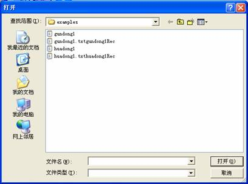
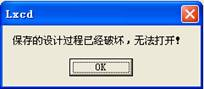
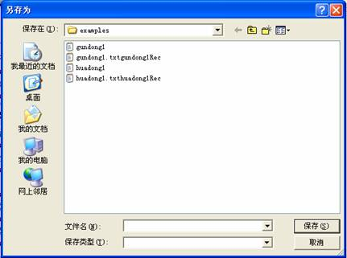
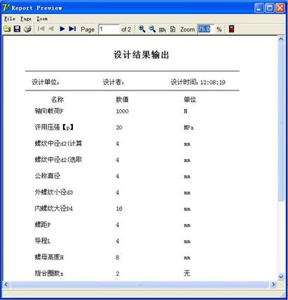
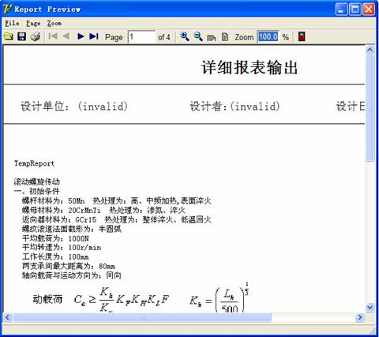
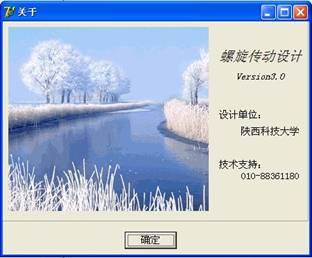
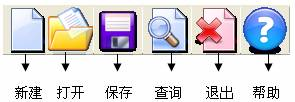

系统的菜单
系统提供的主要菜单项包括：文件、报表和帮助：
文件－>新建：开始一个新的设计任务，如果当前有正在设计的任务系统会自动提示保存；
文件－>打开：打开一个已经存在或者没有完成的设计任务，打开时系统会自动查找设计记录文件，如果没有找到会提示无法打开文件遭到破坏，如下图所示：

上图中gundong1为设计文件，gundong1.txtgundong1Rec为设计过程文件，在保存时系统自动生成，如果没有找到该文件则提示如下图：

文件－>保存：保存一个正在进行的设计任务，如下图所示：

文件－>退出：退出本系统，如果有设计任务，系统会自动提示是否需要保存。
报表－>结果报表输出－>简单报表：该报表形式仅输出设计的初始参数和最后的计算结果，如下图所示：

报表－>结果报表输出－>详细报表：该报表形式显示了用户的初始参数以及每一步的计算公式和计算结果，如下图所示：

帮助－>帮助：螺旋传动设计的帮助系统。
帮助－>关于：本系统的版本信息与版权信息，如下图所示：

系统快捷按钮

以上各个按钮的功能与前文菜单项的功能相同，在此不再赘述。